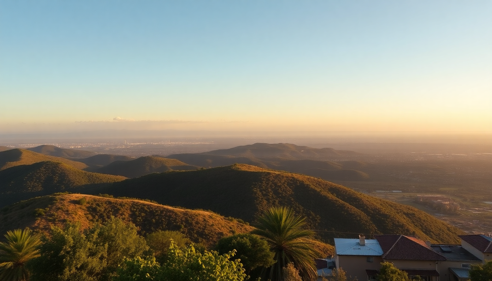

7-Day Mexico Itinerary: Mexico City, Oaxaca & Tulum

I spent a week bouncing between Mexico City’s street-food stalls, Oaxaca’s mezcal bars, and Tulum’s beach clubs. It was rushed, but doable if you fly between cities and keep your expectations tight. Here’s exactly how I’d do it again, with the stops and shortcuts that actually worked.
Is seven days enough for Mexico City, Oaxaca, and Tulum?
Barely. You’ll need internal flights to make it work. I flew Mexico City to Oaxaca (1 hour on Aeroméxico) and Oaxaca to Cancun (2 hours, same airline), then drove 90 minutes down to Tulum. If you try to bus between any of these, you lose a full day. Seven days means two full days per city, plus travel days. It’s a sampler, not a deep dive, but it covers the three biggest hits.
- Mexico City — Spend days 1 and 2 here. Stay in Roma Norte or Condesa for walkable cafes and metro access.
- Oaxaca — Days 3 and 4. Base yourself near the Zócalo for easy access to markets and mezcalerías.
- Tulum — Days 5, 6, and 7. Pick a hotel on the beach road or a cheaper spot in La Veleta town.
What should I do on day one in Mexico City?
Land at Benito Juárez International Airport (MEX) and take the Metrobús or an Uber to your hotel. I dropped my bags at Hotel Brick Roma in Roma Norte — clean, modern, and a five-minute walk from the best taco spot in the city. Head straight to Mercado de San Juan for lunch. It’s a gourmet market where you can try grasshoppers, iguana tacos, and fresh ceviche. Don’t overthink it; just eat.
- Lunch — Tacos de canasta at Taquería El Huequito (the al pastor is the move).
- Afternoon — Walk through Chapultepec Park to the Museo Nacional de Antropología. The Aztec calendar stone alone is worth the entry fee.
- Dinner — Reservations at Pujol are booked months out, so skip it. Go to Contramar for grilled fish and ask for the “atún tostada” if they have it.
How do I handle the second day in Mexico City without wasting time?
Start early at Teotihuacán. Take a bus from Terminal Autobuses del Norte (every 20 minutes, 1 hour ride). Walk the Pyramid of the Sun first, then the Pyramid of the Moon. By 11 AM the crowds get thick, so arrive by 9 AM. I skipped the guided tour — the signage is good enough, and the guides push souvenir stops.
- Lunch — Eat at La Gruta, the cave restaurant near the pyramids. It’s touristy but the mole poblano is legit.
- Back in the city — Coyoacán neighborhood in the afternoon. See Frida Kahlo’s Casa Azul (book tickets online a week ahead, they sell out).
- Evening — Grab a drink at Licorería Limantour in Condesa. Their “Pulque Sour” is a local twist on the classic.
What’s the best way to spend two days in Oaxaca?
Fly into Oaxaca International Airport (OAX) and take a colectivo to the center. I stayed at Hotel Escondido Oaxaca — a converted colonial house with a courtyard, two blocks from the Zócalo. Day one is for the markets and ruins. Monte Albán is a 20-minute taxi from town, and the Zapotec ruins sit on a hill with views over the valley. Go at 8 AM to beat the heat.
- Mercado Benito Juárez — Try the tlayudas (crispy tortillas with beans, cheese, and meat) from Doña Vale.
- Mercado de la Merced — Buy mole paste to take home. Mole Negro from La Cocina de la Abuela is the best.
- Mezcal tasting — Go to Mezcalería In Situ on the Zócalo. The owner, Ulises, will walk you through 10 agave varieties.
- Day two — Take a cooking class at Casa de los Sabores. You’ll make mole, tamales, and drink mezcal between steps. Book via their website, not a third party.
Is Tulum worth the hype, or should I skip it?
Tulum is overpriced and crowded, but the ruins on the cliff are genuinely impressive. I’d spend one day at the Tulum Archaeological Zone (arrive at 8 AM, it opens at 9, and you’ll beat the tour buses). Swim at Playa Paraíso right below the ruins — it’s the only beach in Tulum without sargassum seaweed in my experience. Skip the “eco-parks” like Xcaret unless you love water parks with $100 entry fees.
- Where to stay — La Zebra on the beach road is pricey but the beachfront rooms are worth it. Budget option: Selina Tulum in La Veleta has a pool and coworking space.
- Cenotes — Gran Cenote is the most famous and gets packed. I preferred Cenote Calavera (the “skull” cenote) — smaller, cheaper, and you can jump in from a platform.
- Food — Hartwood is overhyped and overpriced. Go to Antojitos La Chiapaneca for real tacos al pastor at $2 each.
How do I get from Oaxaca to Tulum without losing a day?
Fly Oaxaca to Cancun on Volaris or Aeroméxico. The flight is about 2 hours, but factor in 3 hours total with check-in and baggage. From Cancun Airport, rent a car or book a shared shuttle (ADO buses also run direct to Tulum for about $30). I rented through EasyWay Rentals — they had a desk at the airport and no hidden fees. Drive south on Highway 307; it’s a straight shot, 90 minutes.
- Watch for — Topes (speed bumps) in every town. Slow down or you’ll bottom out.
- Alternate — If you don’t want to drive, the ADO bus from Cancun Airport to Tulum is reliable and drops you at the town center.
What should I skip and what should I prioritize in this itinerary?
Skip the Cenote Ik Kil near Chichén Itzá — it’s a tourist trap with long lines and loud music. Skip Chichén Itzá entirely unless you have a fourth day to spare; it’s 2.5 hours from Tulum and the crowds are brutal. Prioritize Monte Albán over Teotihuacán if you can only do one set of ruins — it’s less crowded and the setting is more dramatic.
- Prioritize — Mezcal tastings in Oaxaca, street tacos in Mexico City, and the Tulum ruins at sunrise.
- Skip — The Frida Kahlo Museum if the line is longer than 30 minutes (it usually is). Go to Museo Dolores Olmedo instead — it has more of her work and no queue.
- Skip — All-inclusive resorts in Tulum. They kill the vibe and the food is mediocre.
FAQ
Is it safe to travel between these cities by bus or car? Yes, but with caveats. The bus between Mexico City and Oaxaca on ADO is safe and comfortable, but it takes 7 hours — I’d fly instead. Driving from Cancun to Tulum on Highway 307 is safe during daylight, but avoid it after dark due to poor lighting and topes. I never felt unsafe in any city, but I stuck to Uber in Mexico City and taxis from hotel stands in Oaxaca.
Do I need to book internal flights and tours in advance? For flights, yes — book at least two weeks ahead to get under $100 per leg. For tours, book Monte Albán and Teotihuacán entry tickets online a few days before. The cooking class in Oaxaca and the Tulum ruins don’t require advance booking for entry, but the ruins sell out of guided tours by 10 AM.
What’s the best time of year for this itinerary? November through February. The weather is dry and warm, and you’ll avoid the rainy season (June to October) when sargassum seaweed hits Tulum’s beaches hard. I went in late January and had 75°F days with no rain. Avoid Semana Santa (Easter week) — prices triple and crowds are insane.
Conclusion
- Fly between Mexico City, Oaxaca, and Cancun to maximize time — buses are too slow for a 7-day trip.
- Stay in Roma Norte (CDMX), near the Zócalo (Oaxaca), and La Veleta or beach road (Tulum) for the best access.
- Book Frida Kahlo’s Casa Azul and Gran Cenote tickets online at least a week ahead to avoid sellouts.
- Skip Chichén Itzá and Hartwood — they’re overpriced and crowded. Prioritize Monte Albán, street tacos, and the Tulum ruins at sunrise.
- Bring cash for markets and small restaurants — many in Oaxaca and Tulum don’t take cards.